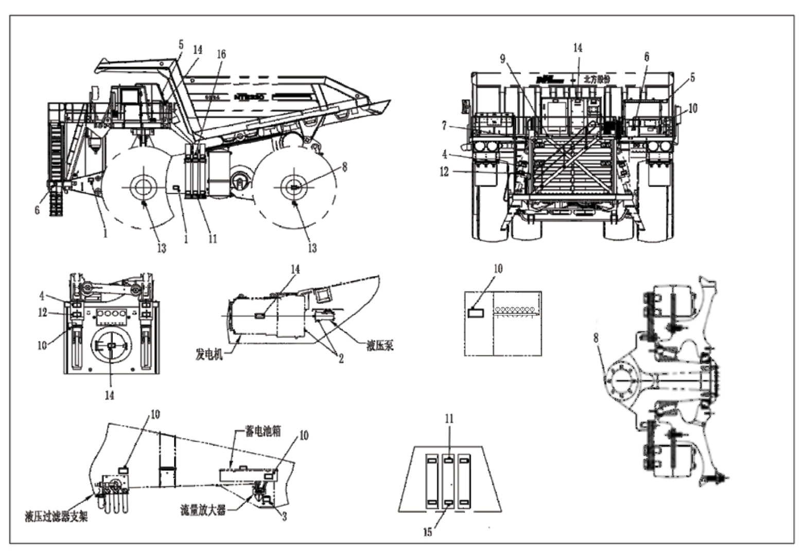
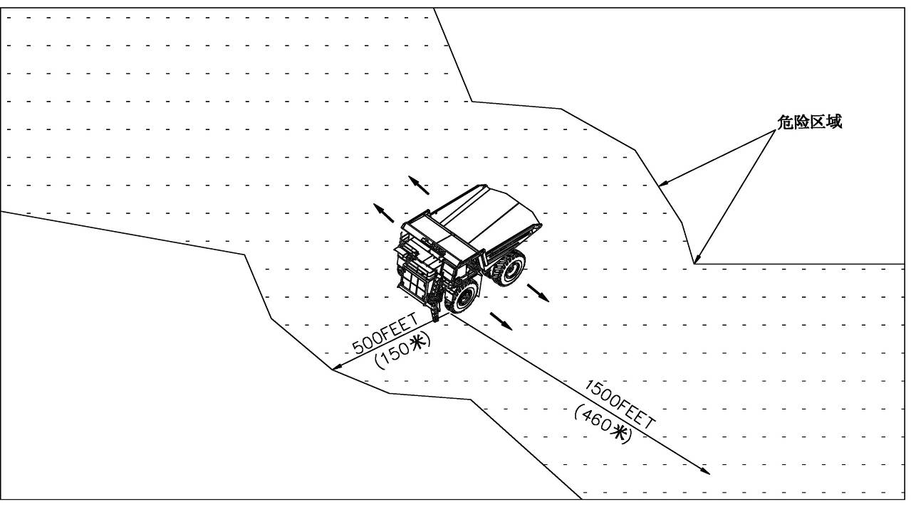

Безопасность
Безопасность
Безопасность - это вопрос, который беспокоит каждого человека, который работает в автомобиле или вокруг него. Человек, осознающий важность безопасности, должен держать себя, других лиц или оборудования вдали от зон действия опасных факторов получения травм или повреждений.
Знаки безопасности - ОПАСНО, ПРЕДУПРЕЖДЕНИЕ, ВНИМАНИЕ
В данной инструкции используются следующие знаки безопасности:
Этот символ предупреждает о необходимости обратить внимание на безопасность. Следует прочитать, понимать и ознакомиться со смысловым значением всех знаков безопасности - ОПАСНО, ПРЕДУПРЕЖДЕНИЕ, ВНИМАНИЕ, используемых в карьерном самосвале.
ОПАСНООПАСНО - указывает на опасную ситуацию, которая привести к смертельному исходу или серьезным травмам, если не принять соответствующие меры.
ПРЕДУПРЕЖДЕНИЕПРЕДУПРЕЖДЕНИЕ - указывает на потенциальную опасность, которая привести к смертельному исходу или серьезным травмам, если не принять соответствующие меры.
ВНИМАНИЕВНИМАНИЕ - указывает на опасную ситуацию, которая привести к травмам небольшой или средней тяжести, если не принять соответствующие меры. Это также используется как предупреждение при проведении небезопасных работ.
ВАЖНОЕ ПРИМЕЧАНИЕ и ПРИМЕЧАНИЕ - указывают на действие и состояние, требующие обращения внимания и пояснения или важную информацию.
Предупреждающие таблички безопасности обычно находятся в местах, где существует потенциальная угроза безопасности. Необходимо следовать требованиям, указанным на этих табличках.
Рис. 1. Знаки безопасности
ПРЕДУПРЕЖДЕНИЕ
Не допускается приближение, существует вероятность получения травм во время работы автомобиля.Поз. 1
Передние колеса в сборе вращаются вслед за вращением рулевого колеса. Зазоры между рамой и шинами увеличиваются или уменьшаются при вращательном движении. Во время вращательного движения существует вероятность ущемления или получения травм любого лица, находящегося в данной зоне. Во время работы карьерного самосвала следует держать любого лица и оборудование вдали от данной части.
ПРЕДУПРЕЖДЕНИЕ
Запрещается работать без средств защиты.
Поз. 2
Когда оборудование работает, приводной вал между основным генератором и гидронасосом тоже вращается на высокой частоте вращения, существует вероятность получения травм без принятия защитных мер.
ПРЕДУПРЕЖДЕНИЕ
Перед выключением выключателя АКБ включите стояночный тормоз, в противном случае это может вызвать случайное перемещение ТС и привести к травмам и смертельному исходу, подробную процедуру см. в инструкции водителя. Поз. 3
Если отключить главный выключатель источника питания перед включением стояночного тормоза, то есть, препятствовать включению стояночного тормоза, в частности, после заглохания двигателя все системы безопасного торможения автомобиля будут освобождаться, автомобиль будет находиться в расторможенном состоянии.
Это еще раз подчеркивает важность остановки автомобиля в безопасном месте, удержания автомобиля в неподвижном состоянии даже после освобождения всех тормозных механизмов и преждевременного отключения главного выключателя источника питания. Перед отключением гласного выключателя включение стояночного тормоза дает возможность увеличить уровень безопасности карьерного самосвала.
ВНИМАНИЕ
Перед снятием следует полностью сбросить азот, более подробный порядок выполнения действий приведен в инструкции по ремонту.Поз. 4
Наполнить энергоаккумулятор сухим азотом. Азот является инертным газом и не может быть взрывоопасным. Перед снятием компонентов следует полностью сбросить предварительно наполненный азот из энергоаккумулятора, в противном случае существует вероятность получения травм под воздействием остаточного давления в системе. В связи с этим, перед ремонтом необходимо сбросить азот.
ВНИМАНИЕ
При проведении осмотра и ремонта в этой зоне необходимо зафиксировать кузов предохранительным канатом или упорными клиньями.Поз. 5
При проведении осмотра и ремонта после подъема кузова следует зафиксировать кузов с помощью предохранительных канатов или упорных клиньев. Если поднятый кузов не зафиксирован надлежащим образом, то запрещается работать в данной зоне или приближаться к карьерному самосвалу.
ВНИМАНИЕ
Используйте поручни!Поз. 6
Поручни служат для облегчения посадки и высадки по лестнице. При посадке и высадке по лестнице всегда следует использовать поручни, чтобы не упасть.
ВНИМАНИЕ
Оборудование работает, будьте осторожны во время работы в данной зоне.Поз. 7
Вентилятор радиатора работает во время работы двигателя, частота вращения вентилятора зависит от температуры окружающей среды, температуры двигателя, нагрузки и т.д. Во время работы в данной зоне будьте особенно осторожны, избегайте соприкосновения с вращающимся вентилятором во время работы двигателя.
ВНИМАНИЕ
Перед проведением осмотра и ремонта тормозов необходимо сбросить давление в энергоаккумуляторе, правильный порядок выполнения действий см. в инструкции по ремонту.Поз. 8
Давление в энергоаккумуляторе очень высокое во время работы карьерного самосвала, даже в момент остановки карьерного самосвала и заглохания двигателя все-таки имеется давление. Ненадлежащее функционирование может вызвать утечку давления под высоким давлением и привести к телесным повреждениям и загрязнению оборудования. Необходимо следовать порядку выполнения действий, указанному в инструкции по ремонту.
ВНИМАНИЕ
Система охлаждения находится под давлением, будьте осторожны при открытии крышки радиатора.Поз. 9
Система охлаждения находится под давлением при теплоотдаче. Регулировка и поддержание данного давления осуществляются с помощью крышки радиатора и соответствующей сборочной единицы. При ослаблении или снятии крышки радиатора будьте особенно осторожны во избежание внезапного сброса давления и вытекания жидкости. Существует вероятность получения травм вследствие соприкосновения с крышкой/горячей жидкостью. Более подробный порядок выполнения действий приведен в данной инструкции.
ВНИМАНИЕ
Перед проведением осмотра и ремонта компонентов необходимо сбросить давление в энергоаккумуляторе, правильный порядок выполнения действий см. в инструкции по ремонту.Поз. 10
Давление в энергоаккумуляторе очень высокое во время работы карьерного самосвала, даже в момент остановки карьерного самосвала и заглохания двигателя все-таки имеется давление. Ненадлежащее функционирование может вызвать утечку давления под высоким давлением и привести к телесным повреждениям и загрязнению оборудования. Необходимо следовать порядку выполнения действий, указанному в инструкции по ремонту.
ВНИМАНИЕ
Перед проведением демонтажа необходимо полностью выпустить азот из энергоаккумулятора, конкретный порядок выполнения действий см. в инструкции по ремонту.Поз. 11
Давление в энергоаккумуляторе очень высокое во время работы карьерного самосвала, даже в момент остановки карьерного самосвала и заглохания двигателя все-таки имеется давление. Ненадлежащее функционирование может вызвать утечку давления под высоким давлением и привести к телесным повреждениям и загрязнению оборудования. Необходимо следовать порядку выполнения действий, указанному в инструкции по ремонту.
ОПАСНО
Следует наполнить энергоаккумулятор только сухим азотом, запрещается наполнение кислородом, наполнение кислородом может вызвать серьезный взрыв, более подробный порядок наполнения приведен в инструкции по ремонту.Поз. 12
Масло-азотный цилиндр подвески наполнен сухим азотом, азот является инертным газом и не может быть взрывоопасным. Перед снятием компонентов следует полностью сбросить предварительно наполненный газ из цилиндра подвески, в противном случае существует вероятность возникновения взрыва. В связи с этим, перед ремонтом следует сбросить азот. Более подробная информация приведена в инструкции на оборудование.
Наполнение другим газом (например, кислород) может привести к угрозе взрыва. В связи с этим, следует использовать только сухой азот.
ОПАСНО
Перед ослаблением следует полностью сбросить давление в шинах.Поз. 13
Ненадлежащая фиксация обода или шины может вызвать пропускание сжатого воздуха из шины и привести к угрозе взрыва. В связи с этим, перед ослабление прижимных гаек следует сбросить газ из шин. Перед повторной установкой в первую очередь следует установить и зафиксировать шину с ободом в сборе.
ОПАСНО
Высокое давлениеПоз. 14
Электрическая энергия передается от электрической системы при высоком напряжении и большом токе к колесам с электроприводом. Будьте особенно осторожны при работе в этих областях, особенно при работе двигателя.
ОПАСНО
Наполнить энергоаккумулятор только сухим азотом, запрещается наполнить его кислородом, наполнение кислородом может привести к угрозе взрыва, более подробный порядок наполнения приведен в инструкции по ремонту. Давление предварительного наполнения должно быть не более 1000 фунтов/кв. дюйм.Поз. 15
Наполнить энергоаккумулятор сухим азотом, азот является инертным газом и не может быть взрывоопасным. Перед снятием компонентов следует полностью сбросить предварительно наполненный азот из энергоаккумулятора, в противном случае существует вероятность возникновения взрыва. В связи с этим, перед ремонтом необходимо сбросить азот.
Наполнение другим газом (например, кислород) может привести к угрозе взрыва. В связи с этим, следует использовать только сухой азот.
ОПАСНО
Наполнить энергоаккумулятор только сухим азотом, запрещается наполнить его кислородом, наполнение кислородом может привести к угрозе взрыва, более подробный порядок наполнения приведен в инструкции по ремонту. Давление предварительного наполнения должно быть не более 1500 фунтов/кв. дюйм.Поз. 16
Наполнить энергоаккумулятор сухим азотом, азот является инертным газом и не может быть взрывоопасным. Перед снятием компонентов следует полностью сбросить предварительно наполненный азот из энергоаккумулятора. В противном случае существует вероятность возникновения взрыва. В связи с этим, перед ремонтом следует сбросить азот.
Наполнение другим газом (например, кислород) может привести к угрозе взрыва. В связи с этим, следует использовать только сухой азот.
Требования к одежде
При вождении или ремонте карьерного самосвала каждый персонал должен носить шлем, защитные очки и защитную обувь. Кроме того, нельзя носить слишком свободную, тяжелую или широкую одежду, которая мешает движению и негативно влиять на работу оператора над карьерным самосвалом или инструментом. Избегайте ношения слишком свободных, гладких перчаток, обуви и т.д.
ВНИМАНИЕ: Необходимо следовать конкретным рекомендациям или требованиям, действующим на территории карьера.
Подготовка к работе
При подготовке к работе на карьерном самосвале следует ознакомиться с системами или компонентами карьерного самосвала, это очень важно. В противном случае это может привести к затрате большего времени на ремонт, напрасной замене компонентов, не подлежащих замене.
1. Убедиться в остановке карьерного самосвала в безопасном месте, предотвратить несанкционированный запуск и перемещение карьерный самосвала.
2. При ремонте карьерного самосвала необходимо следовать требованиям данной инструкции и рекомендациям, действующим на территории карьера.
3. Перед снятием узлов и деталей полностью сбросить остаточное давление в системах или компонентах.
Стоянка автомобиля
Длительная стоянка карьерного самосвала в безопасном месте производится в следующем порядке:
ПРИМЕЧАНИЕ: Предохранительные устройства используются в следующих случаях:
1. если передние и задние колеса карьерного самосвала застряли в канаве;
2. если карьерный самосвал отъезжает вдали от склона;
3. при стоянке на склоне следует подложить клинья спереди и сзади под задние колеса во избежание случайного перемещения карьерного самосвала на склоне.
Если карьерный самосвал не перемещается после растормаживания при условии соблюдения этих требований, то это свидетельствует о нахождении карьерного самосвала в безопасном месте.
ПРИМЕЧАНИЕ: Необходимо следовать этим указаниям при оставлении карьерного самосвала без присмотра, в случае заглохания двигателя или возникновения неисправностей в тормозной системы.
1. Удерживать карьерный самосвал в неподвижном состоянии с помощью замедлителя и рабочей тормозной системы в соответствии с требованиями, указанными в части «Тормозная система». Нажать на педаль тормоза до упора, чтобы тотчас же затормозить карьерный самосвал.
2. Переместить рычаг переключения передач в нейтральное положение.
3. Переключить переключатель стояночного тормоза в положение «ВКЛ» до момента горения индикатора стояночного тормоза.
ПРЕДУПРЕЖДЕНИЕ
Если только система торможения в загруженном состоянии приводится в действие, то не допускается покидание кабины в том случае. Иначе необходимо остановить карьерный самосвал в безопасном месте и включить стояночный тормоз.4. Отпустить педаль тормоза и выключить стояночный тормоз, следует удержать карьерный самосвал в неподвижном состоянии.
5. Остановка двигателя производится в соответствии с порядком остановки двигателя, указанным в части «Двигатель».
6. Допускается оставление карьерного самосвала без присмотра только после надежном удержания карьерного самосвала в неподвижном состоянии и подтверждения отсутствия вероятности случайного перемещения.
7. Желательно подложить клинья под колеса карьерного самосвала.
ПРИМЕЧАНИЕ: Остановить карьерный самосвал в месте, не мешающем проезду других транспортных средств. Если существует необходимость стоянки карьерного самосвала на дороге по какой-то причине, то рекомендуется включить аварийную световую сигнализацию или выставить знак аварийной остановки (включить аварийную световую сигнализацию при плохой видимости, в темноте, на повороте, на узкой дороге или в других подобных условиях).
Перед проведением осмотра и ремонта следует остановить карьерный самосвал в безопасном месте и принять необходимые меры по защите от несанкционированного запуска или приведения карьерного самосвала в движение без разрушения обслуживающего персонала.
ОПАСНО
Наличие источника огня вокруг шины или перегрев может привести к угрозе взрыва шины.
Безопасность шин
Во всяком случае появление запаха паленой резины или перегрев тормозов карьерного самосвала может привести к угрозе взрыва шины. Если пожар переходит на шину и колесо при возгорании в карьерном самосвале, то существует вероятность взрыва шины. В этом случае не допускается приближение к карьерному самосвалу или переход в опасную зону (см. рис. 1). Следует переместить карьерный самосвал в безопасное место, если не существует вероятность получения травм водителя или других людей.
Следует находиться на расстоянии от шины спереди с сзади 500 футов (150 м), от боковых сторон шины 1500 футов (460м). Следует приближать к шине, находящейся в опасной зоне, спереди и сзади карьерного самосвала, кроме того, следует использовать крупноразмерный бульдозерный отвал в качестве переднего защитного устройства. Если происходит возгорание тормозов или появляется запах паленой резины, то не допускается приближение к карьерному самосвалу. Требуется попытка дистанционного тушения очага возгорания. Нельзя бросаться с переносным огнетушителем в руках на карьерный самосвал для тушения очага возгорания. Допускается приближение к карьерному самосвалу только после остывания шин в течение 8 часов или более..
Когда шина смонтирована на ободе, не допускается сварка или нагрев компонентов обода. Когда производится дуговая сварка под флюсом или нагрев компонентов обода, то наполненный в шине газ может быть воспламеняющимся, это может привести к угрозе взрыва шины с ободом. Это предупреждение также относится к накачанной азотом шине. Несмотря на то, что азот не горит, но тепло, образующееся при сварке, может привести к травмам или смертельному исходу. Следует снять все компоненты обода, подлежащие восстановлению методом нагрева, затем проводить ремонт.
Рис. 2 Зоны действия опасных факторов возгорания шин
Высокотемпературные компоненты
Высокотемпературные компоненты ТС показаны на рис. 3, а именно:
1. Двигатель;
2. Радиатор и охлаждающая трубка;
3. Выхлопная труба;
4. Гидравлические компоненты (фильтрующий элемент + насос);
5. Картер заднего моста;
6. Передний тормозной диск;
7. Задний тормозной диск;
8. Турбонагнетатель;
9. Задней части сетки резистора.
Рис. 3. Схема высокотемпературных компонентов ТС
Описание управление – безопасность
000-0010
Описание управление – безопасность
000-0010
6
5
Описание управление –безопасность
000-0010
1
Описание управление – безопасность
000-0010
Описание управление – безопасность
000-0010
Описание управление – безопасность
000-0010
Описание управление – безопасность
000-0010
8
7
Кронштейн гидравлического фильтра
Аккумуляторный отсек
Усилитель потока
Гидронасос
Генератор
Опасная зона
500 футов
1500 футов
(460 м)
(150 м)
ВНИМАНИЕ
После остановки ТС температура высокотемпературных компонентов очень высока, будьте особенно осторожны при приближении к ТС.
Иллюстрации

